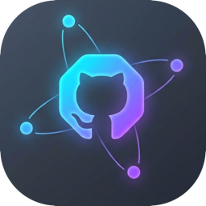

LuntLunt
A quiet macOS menubar hub for GitHub work.


Design Principles
Lunt keeps GitHub triage lightweight in your macOS menu bar:
- Single entry point in the menu bar
- Fast triage flows that finish in seconds and open deep work in GitHub
- Calm transient views with keyboard shortcuts and a single workspace window
Current Capabilities
Lunt includes these capabilities:
- Menu bar popover with configurable Inbox, Work, and Watch sections
- Inline GitHub OAuth device flow sign-in that stores sessions in macOS Keychain
- Unread GitHub notifications in Inbox with issue and pull request grouping, read actions, and system notifications
- Open issues and pull requests in Work organized by role and pinned queries
- Watched repositories, watched accounts, and saved query alerts in Watch
- Lunt Workspace window to manage watched targets and saved issue or pull request queries
- Notification rules with automatic background evaluation and on-demand execution in Settings
- Pull request status and CI check summary in unified list rows
- Automatic updates through Sparkle
- English and Simplified Chinese localization
Requirements
- macOS 15 or later on Apple Silicon (
arm64)